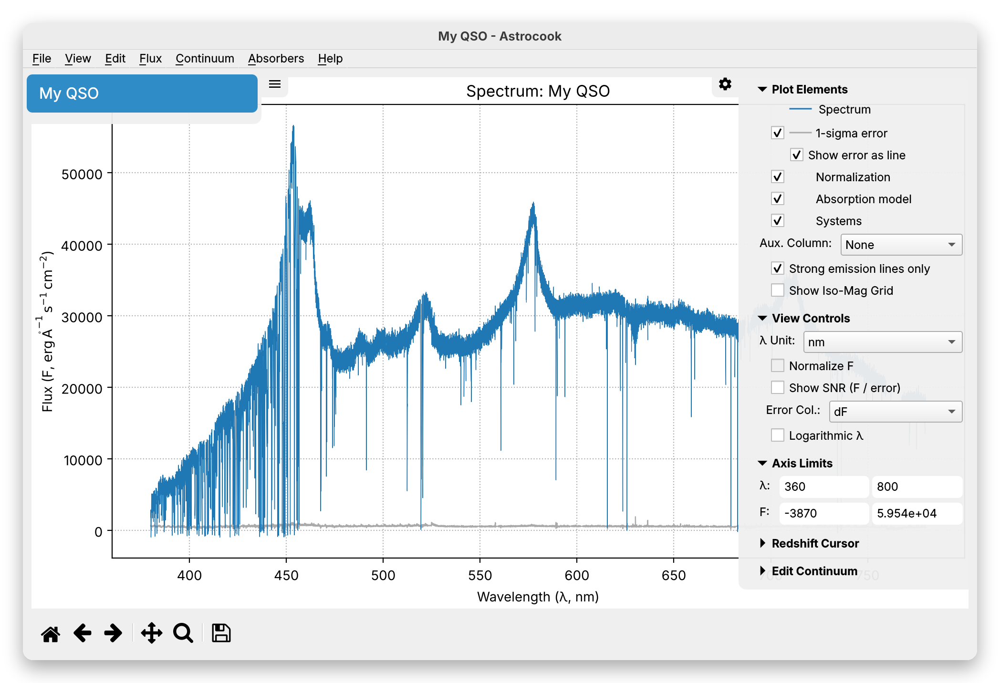

Getting Started#
Welcome to Astrocook V2! This guide will walk you through the basics of the interface: loading data, exploring your spectra, and managing your analysis sessions.
1. Loading a Spectrum#
Let’s begin by loading some data. Astrocook supports various formats, including standard FITS files and its own archive formats (.acs, .acs2).
Launch Astrocook. You will be greeted by the welcome screen.
Go to the menu bar and select File > Open Session… (or press
Ctrl+O/Cmd+O).Select your spectrum file. You can select multiple files at once if you want to load several observations simultaneously.
Once loaded, the interface will come alive. The central area displays your spectrum, while two sidebars provide control over your data and visualization.

5. Exporting and Importing Data#
Astrocook allows you to easily exchange data with external tools (like spreadsheet managers, Topcat, or custom Python scripts) using standard CSV files.
Export to ASCII#
To save your current data in a human-readable format, go to File > Export to ASCII…. A dialog will appear allowing you to select exactly what to export:
Spectrum (spec): Saves the Wavelength (\(x\)), Flux (\(y\)), Error (\(dy\)), Continuum (\(cont\)), and any other active spectral columns into a
_spec.csvfile.System List (systems): Saves your identified absorption lines (including Redshift, Column Density, Doppler Parameter, etc.) into a
_systems.csvfile.
You can choose to export entire structures or pick individual columns. The suggested filename will automatically adjust based on your selection, and Astrocook will warn you if you are about to overwrite existing files.
Import from ASCII#
If you have manipulated your exported _spec.csv data externally, you can bring it back into Astrocook by going to File > Import from ASCII….
Astrocook will match the column headers in your CSV to the columns in the active session and overwrite them.
Safety first: The imported file must have the exact same number of rows (pixels) as your current spectrum. Because this operates through the recipe pipeline, the import is fully undoable via the Log Scripter or
Ctrl+Z(Cmd+Z).
What’s Next?#
Now that you are comfortable with the interface, you are ready to manipulate your data. Check out the Editing Data tutorial to learn how to clean up your spectra.